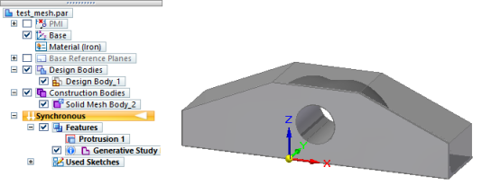
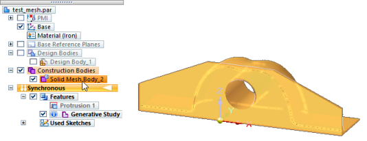

Add material to a generative result
Use this technique when you want to work with the generated mesh body to add material (and remove material) with simple Boolean commands.
-
Save the document containing the mesh body as a new part file using the Save As command.
-
Create another part file, and then select the Home tab→Clipboard group→Part Copy command.
-
In the Part Copy Parameters dialog box, choose the Copy as Construction body option and from the Feature Tree List, select the objects to copy.
-
Both the generated mesh body and the original design space body are shown. Use the check box to show only the generated mesh body.

Note:You can select (highlight) the solid mesh body, but you cannot select individual faces or other elements in the mesh.

-
To be able to add or remove material, you need a reference plane on which to draw.
-
Use the Coincident Plane command to create a reference plane aligned to one of the base coordinates system axes.
-
Select this plane and draw your sketch.
-
-
Select a command in the Solids group to extrude or cut the mesh body using the sketch.

Use the same technique to add surfaces to the mesh body with some of the Solid Edge surface modeling commands. For example, after adding a reference plane, you can create new surfaces and trim others using the Intersection Curve command.